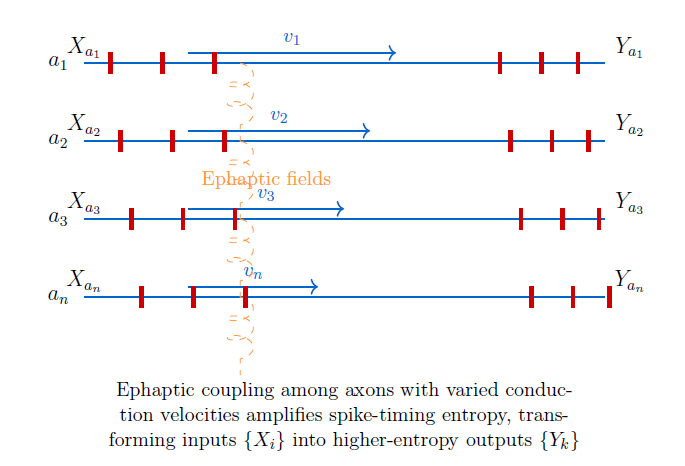
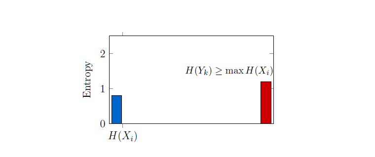

Keywords: visual cortex, Hubel–Wiesel model, ephaptic coupling, entropy amplification, temporal coding, complex cells, axon tracts, information theory, neural computation, nonlocal consciousness, observer functions.
This study integrates several scientific traditions to explore entropy amplification in neural processing. The foundational work of Hubel and Wiesel established the hierarchical structure of the visual cortex, where simple cells detect specific orientations and positions, feeding into complex cells that achieve feature invariance [1, 2, 3]. Comparative studies in rodents confirm conserved orientation tuning and hierarchical organization [4, 5]. Information theory, rooted in Shannon's entropy, quantifies uncertainty in neural spike timing, providing a framework to assess how ephaptic coupling increases output entropy [6, 7]. Ephaptic interactions, driven by extracellular electric fields, introduce nonlinear dynamics among axons with varying conduction velocities, as evidenced by prior research [8, 9]. This mechanism aligns with the Nonlocal Unification (NU) framework, where observer functions sample an informational field, enhancing entropy across processing levels [10, 11]. Thermodynamic principles distinguish neural entropy from physical entropy, ensuring computational efficiency [12]. The model also draws on electrophysiological methods, such as patch-clamp and multi-electrode arrays, to propose experiments testing entropy changes [13, 14]. Furthermore, it connects to bio-inspired computing, suggesting that timing-sensitive mechanisms could enhance spiking neural networks, analogous to pooling in convolutional networks [10]. This multidisciplinary synthesis of neuroscience, information theory, thermodynamics, and speculative consciousness frameworks provides a robust foundation for investigating how axon tracts amplify temporal-coding entropy, distinct from the hierarchical and nonsynaptic mechanisms introduced earlier.
Reading Guide
This paper offers multiple paths based on reader goals. Readers may follow the suggested paths to explore specific aspects of the proposed model.
The following introduction outlines the foundational concepts and sets the stage for exploring temporal coding mechanisms.
Introduction
The Hubel–Wiesel model explains how simple cells in the visual cortex, sensitive to specific orientations and positions, feed complex cells that achieve position invariance and direction selectivity through spatial pooling [1, 2, 3]. Studies in rodents confirm similar hierarchical organization and orientation tuning despite anatomical differences [4, 15]. In mice, layer 2/3 neurons show position-tolerant responses and direction selectivity, indicating conserved computational principles [5]. Recent research emphasizes temporal coding and spike timing in encoding dynamic stimuli [16]. This temporal dimension suggests a need to explore nonsynaptic mechanisms influencing information flow. We propose that ephaptic coupling in axon tracts amplifies temporal spike-pattern entropy, enhancing information flow from simple to complex cells. This aligns with the Nonlocal Unification (NU) framework, where observer functions sample a universal informational field (NC), increasing entropy [10, 11]. Ephaptic interactions, supported by studies showing extracellular fields influencing cortical activity [8, 9], enable complex cells to maintain selectivity and invariance. Axon tracts thus act as computational analogs to observer functions, reformatting information for higher cortical processing. This hypothesis bridges neural mechanisms with information-theoretic principles, which we explore next.
Temporal Coding and Ephaptic Coupling
The role of ephaptic coupling in temporal coding provides a novel perspective on neural information processing.

Temporal coding uses spike timing to encode information. Let $X_i$ denote the spike-time variable for the $i$th axon at a downstream detection point. Without coupling, the output $X_i^{\text{out}}$ mirrors the input, limited by channel noise. Ephaptic coupling among axons with different conduction velocities introduces nonlinear interactions via extracellular fields, transforming inputs $\{X_i\}$ into outputs $\{Y_k\}$ with higher entropy, $H(Y_k) \geq \max_i H(X_i)$ [6, 7]. This mirrors NU's observer functions, where each function $f_i^j$ samples a larger NC subset, increasing entropy [10]. This entropy amplification enhances the information available to complex cells. We now examine how this mechanism integrates with the Hubel–Wiesel model.

Hubel–Wiesel Integration
The entropy amplification in axon tracts directly supports the hierarchical processing in the Hubel–Wiesel model. Axons $\{a_1, \ldots, a_N\}$ from simple cells with shared orientation but varied positions carry spike-time variables $\{X_i\}$. Ephaptic coupling transforms these into $\{Y_k\}$, with $H(Y_k) \geq \max_i H(X_i)$. Complex cells integrate these high-entropy signals, maintaining orientation selectivity and position invariance via nonlinear dendritic dynamics. Tracts thus act as observer-like functions, enhancing information before synaptic integration. This preprocessing step ensures robust feature detection in complex cells. The next section explores how this contributes to position invariance and information preservation.
Invariance and Information
The enhanced entropy from ephaptic coupling supports robust invariant feature encoding. Pooling for position invariance typically reduces positional data. Ephaptic entropy amplification preserves or boosts temporal-coding entropy, aligning with NU's information-preserving observer functions [10]. Tracts enable complex cells to encode invariant features while retaining temporal fidelity, supporting efficient coding. This balance of invariance and information retention is critical for efficient neural computation. We now formalize these interactions mathematically to clarify the underlying dynamics.
Mathematical Formulation
The mathematical framework quantifies how ephaptic coupling enhances entropy in neural signals. For two axons with membrane potentials $V_i(x,t)$, $i=1,2$, along axial coordinate $x \in [0,L]$, coupled cable equations describe dynamics [17]:
Here $C_m$ is capacitance, $R_a$ axial resistance, $R_m$ membrane resistance, $I_i$ input current, and $\kappa$ coupling strength. Coupling can also be nonlinear and this is investigated in Appendix B. Varied conduction velocities yield outputs $Y$ with $H(Y) \geq \max\{H(X_1), H(X_2)\}$ [6]. In NU, this maps to observer functions $f(\Delta I)$, increasing entropy toward NC [10]. This model provides a rigorous basis for understanding entropy amplification. The following section connects these principles to efficient coding in sensory systems.
Efficient Coding and NC
The entropy amplification aligns with principles of efficient neural coding. Natural images have high redundancy. Sensory systems reduce it to prioritize informative features. Ephaptic coupling selects high-entropy spike patterns, akin to NU's observer functions sampling richer NC subsets. This preprocessing enhances coding efficiency before synaptic integration, suggesting neural tracts implement informational geometry. This efficient coding mechanism supports robust sensory processing. We now explore how this fits into the broader cortical hierarchy.
Hierarchical Processing
The hierarchical organization of the visual cortex leverages entropy amplification for robust feature extraction. Simple cells (Level 1) produce spike-time variables $\{X_i\}$ with entropies $\{H_i\}$. Ephaptic coupling yields Level 1.5 variables $\{Y_k\}$ with $H(Y_k) \geq \max_i H_i$. Complex cells (Level 2) detect high-entropy patterns via dendritic nonlinearities, mirroring NU's observer sequences increasing entropy [10]. Higher levels achieve greater invariance while preserving information. This hierarchical entropy increase enhances cortical processing efficiency. The thermodynamic implications of this process are considered next.
Thermodynamics and Capacity
The thermodynamic perspective clarifies the energetic constraints of entropy amplification. Entropy amplification aligns with thermodynamics, as tracts are active systems. Shannon entropy reflects spike-timing uncertainty, not thermodynamic entropy. Downstream synapses must handle amplified entropy, consistent with NU's informational manifolds [10, 6]. This balance ensures sustainable neural computation. We now outline testable predictions to validate this model.
Testable Predictions
Experimental validation is essential to confirm the proposed entropy amplification mechanism. The model predicts:
- Altering extracellular resistivity (e.g., via osmotic changes) affects ephaptic coupling and complex-cell information.
- Modifying conduction velocities (e.g., via myelination) impacts entropy amplification.
- Multi-electrode recordings show higher joint entropy at tract termini.
- Developmental tract geometry changes affect complex-cell invariance [2].
These predictions provide a roadmap for empirical testing. The limitations of the model are discussed next to provide a balanced perspective.
Limitations
Understanding the model's constraints is crucial for interpreting its applicability. Entropy amplification assumes independent inputs. Correlated simple-cell inputs require mutual information analysis, $I(Y;S) \geq \max_i I(X_i;S)$. This model complements synaptic mechanisms, integrating with dendritic and inhibitory processes. These limitations highlight areas for refinement. We now consider implications for artificial neural networks.
Deep Learning Implications
The principles of entropy amplification offer insights for designing robust artificial systems. Convolutional networks lose information during pooling. Ephaptic-like timing-sensitive layers in spiking networks could enhance robustness, mirroring NU's information preservation [10]. These insights could improve neural network architectures. The role of ephaptic coupling in direction selectivity is explored next.
Direction Selectivity
Direction selectivity benefits from the temporal precision enabled by ephaptic coupling. Ephaptic coupling enhances direction selectivity by aligning spike timing with motion, amplifying entropy for preferred directions, akin to NU's observer functions shaping temporal experience [10]. This mechanism supports dynamic visual processing. Future research directions to further explore these ideas are outlined next.
Future Research
Further studies can refine and expand the proposed model. Simulations of $N$ coupled axons with realistic parameters—using spike-time ensembles from simple cells—can quantify mutual information $I(Y; S)$ as a function of coupling strength $\kappa$ and conduction-velocity dispersion. This would help identify optimal regimes for entropy amplification, aligning with NU's empirical probing of observer functions [10].
In parallel, an alternate but complementary hypothesis suggests the existence of frequency-specific metric cells in the brain, sensitive to gravitational-wave perturbations originating from distinct epochs of universal history. If time is fundamentally discrete, these cells may receive metric information from across the spacetime manifold, effectively sampling temporally distributed subsets of Nonlocal Consciousness (NC). Unlike the tract-level preprocessing proposed here, which enhances entropy locally via ephaptic coupling, metric cells may enable selective activation of entire temporal epochs, inundating the brain with frequency-specific information from different stages of cosmic expansion [18, 19].
Future work could clarify and explore how these two mechanisms—ephaptic entropy amplification and metric-cell selectivity—interact or converge within a unified framework of neural-spacetime integration, and whether they jointly bolster the case for a neural correlate of nonlocal consciousness.
Conclusion
Axon tracts amplify temporal-coding entropy via ephaptic coupling, paralleling NU's observer functions converging to NC. This reframes the Hubel–Wiesel model as an information-preserving system, with tracts as computational elements. The synthesis offers testable predictions and insights for artificial systems.
Acknowledgment
This work was prepared in collaboration with an LLM.
Appendix A — Testing Prediction 1: Experimental Proposal
To test entropy amplification via ephaptic coupling, we propose an in-vitro experiment using cortical slices from the visual cortex. Osmotic agents like mannitol reduce extracellular resistivity, modulating ephaptic interactions [12, 20]. Acute slices preserve laminar geometry and tract integrity. Graded mannitol concentrations alter resistivity, affecting spike-timing dynamics. Patch-clamp recordings from complex cells measure orientation selectivity, position invariance, and entropy. Multi-electrode arrays quantify joint entropy at tract termini [13, 14]. This tests whether ephaptic coupling increases spike-timing entropy, supporting the model's coupling term $\kappa$. Reducing resistivity may weaken timing precision, while restoring it enhances it, confirming tracts' role in information processing. This aligns with NU's observer-like functions, thermodynamics, and mutual-information analyses, offering insights for neural network designs.
Appendix B — Theoretical Underpinnings of Ephaptic Coupling
In this appendix, the authors present the Crank–Nicolson formulae for simulation of nonlinearities introduced in the current-coupling term of the coupled-axon governing equation of Reutskiy. The exact matrix equation is obtained for this case. The setting is also generalized to higher-order nonlinearities.
B.1 Introduction
Mathematical modeling of nerve cells plays a critical role in understanding their function under idealized conditions. Modeling methods include formulation of differential equations via circuit theory as well as formation of these equations by analogy with Newtonian mechanics. Idealized conditions include benign settings of external fluid pressure or internal concentrations. By formulating differential equations one sees how various parameters of nerve-cell structure interact with conditions in the milieu. Thus, these models offer insight into the underlying mechanisms of neural activity and help predict responses in more realistic or perturbed scenarios. In particular, simulating signal propagation in axons and axon bundles is a key aspect of such modeling efforts.
These numerical simulations are often unavoidably performed using coarse linear approximations. However, biological systems are rarely linear in nature. Nonlinear phenomena—where outputs do not scale proportionally with inputs—are ubiquitous in both natural and engineered systems [21]. Many engineered electronic components, for instance, exhibit nonlinear current–voltage relationships. For instance, the ubiquitous circuit component, the diode, has a nonlinear I–V curve. Since standard literature and neuroscience textbooks often draw an analogy between the nervous system and a massive, complex electrical circuit, it is natural to hypothesize that nonlinearities may also play a role in neural behavior.
Nonlinear coupling mechanisms also appear in physical systems such as groups of proximal candle flames. In [22], the authors report nonlinear coupling terms of the form $\sigma T^n$, where $\sigma$ is the Stefan–Boltzmann constant, $T$ is temperature, and $n$ ranges from 2 to 4. These terms enable phase synchronization between individual flame oscillators. Motivated by the potential relevance of such nonlinear terms in neural ephaptic interactions (see Equation (7) in [23]), we explore their incorporation into multi-axon models. Our interest is further inspired by forms such as the Burgers'–Huxley equation, which has been applied to model wave-like propagation in neural tissue [24].
In this paper, we investigate the discretization of a nonlinear PDE model in which the transmembrane potential acts as a coefficient on the second spatial derivative—a basic but representative form of nonlinear coupling. Related work on nonlinear PDE dynamics includes [25, 26, 27].
The remainder of this paper is structured as follows. Section B.2 surveys relevant literature on axonal modeling and ephaptic interactions. Section B.3 introduces notation and summarizes classical models. Section B.4 presents the standard multi-axon ephaptic model. In Section B.5, we introduce and motivate a nonlinear coupling term. Section B.6 discusses its numerical discretization, followed by a generalization in Section B.7. Section B.8 concludes the appendix.
B.2 Literature Review
Initially, the view of neuroscientists for a long time was unclear that cells were the basic building blocks of brain function [28]. With the works of Cajal the neuron doctrine gained prevalence [29]. As per the neuron doctrine, neurons were the structures that were fundamental in the brain. Many types of neurons were soon discovered and classified. Through the technique of staining, their morphology could easily be identified [30]. Their connectivity surprised many by the complexity of the neuronal arbor. Dendrites and axons were identified. Synapses were discovered as the place of information exchange between neighboring connected neurons [31]. Various types of synapses such as axo-axonal and axo-dendritic were identified. In the 1940s non-synaptic longitudinal connectivity was also discovered, as though the old argument for a diffuse and 'whole' medium was rearing its head again. The work of Arvanitaki [32] proved critical and she named the new connectivity as 'ephaptic.'
Later in the second half of the twentieth century many works appeared which analyzed not only the Hodgkin–Huxley single axon situation, but also the ephaptic case [33]. The complexity of the Hodgkin–Huxley formulation guaranteed many interesting studies and phenomena. Nevertheless, in the hope of explaining the ephaptic case, and accounting for three-dimensional geometry, new variables such as a connectivity-capturing geometric matrix were introduced [34]. The nonlinearity considered in this paper is but a continuation of this long program of better understanding the brain and capturing its complexity in a single formula.
B.3 Preliminaries
The precursors to the nonlinear equation of this paper are: the Hodgkin–Huxley equation [35, 36], the Reutskiy equation [23] and the geometrical ephaptic equation [37]. We present here a table which contains the notation used in this paper.
| S.No. | Symbol | Meaning |
|---|---|---|
| 1 | $C_i$ | Capacitance of the $i$-th axon's myelin sheath, per unit length |
| 2 | $V_i$ | Transmembrane voltage of the $i$-th axon |
| 3 | $(x,t)$ | Space and time variables |
| 4 | $\kappa,\;\kappa_i$ | Conductivity constants for the $i$-th axon |
| 5 | $\varsigma_k,\;\zeta_k$ | Coupling coefficients for the $k$-th axon |
| 6 | $\xi$ | Weighting factor for conductance term |
| 7 | $\alpha,\;\alpha_i$ | Coefficients related to time discretization for the $i$-th axon |
| 8 | $\beta,\;\beta_i$ | Coefficients related to spatial discretization for the $i$-th axon |
| 9 | $G,\;G_i$ | Conductance per unit length for the $i$-th axon |
| 10 | $I^{\text{ion,inj}}$ | Ionic or injected current |
| 11 | $L$ | Number of spatial discretizations |
| 12 | $\vec{x}^{\,n+1}$ | Systematized vector of transmembrane voltages at the $(n+1)$-th time instant |
| 13 | $F$ | Order of the general nonlinearity |
| 14 | $\Delta t$ | Time-step size in discretization |
| 15 | $\Delta x$ | Spatial step size in discretization |
| 16 | $S_i^n$ | Second spatial-derivative term for the $i$-th axon at time $n$ |
| 17 | $R_n$ | Second spatial-derivative term used in matrix formulation at time $n$ |
| 18 | $A_n,\;B_n$ | Matrices in the discretized system for coupled axons |
| 19 | $\mathrm{RHS}_1^{\le n},\;\mathrm{RHS}_2^{\le n}$ | Right-hand-side vectors for the discretized system at or before time $n$ |
| 20 | $D$ | Diffusion coefficient |
| 21 | $\gamma$ | Coefficient for the first spatial derivative |
| 22 | $V_2^n(i)$ | Discretized value of $V_2$ at spatial point $i$ and time $n$ |
| 23 | $\Sigma^{(n)}$ | Diagonal matrix with entries proportional to $V_2^{2,\,n+1/2}(i)$ |
| 24 | $\sigma_i^{(n)}$ | Diagonal entries of $\Sigma^{(n)}$ |
| 25 | $A^{(n)},\;B^{(n)}$ | Tridiagonal matrices for the discretized system |
| 26 | $\Phi_n$ | State-transition matrix |
| 27 | $\Gamma_n$ | Input matrix |
| 28 | $C_n$ | Output matrix |
| 29 | $\mathcal{C}_n$ | Controllability matrix |
| 30 | $\mathcal{O}_n$ | Observability matrix |
B.4 The Coupled Equation
The multiple-axon equation is
and we wish to modify the coupling term. Note that whether we introduce a voltage-squared in place of a voltage in the coupling sum or in the term outside and prior to the coupling sum, we will have to deal with discretization of terms of the form
This is the nature of the basic nonlinearity. For basic details on discretization, we refer the reader to Crank and Nicolson's original paper [38].
B.5 Introduction of Nonlinearity
We begin with the two equations which are to be discretized after nonlinearization,
and
While several types of nonlinearities might be considered, we will discretize the following two coupled nonlinear equations:
and
The nonlinear term can be discretized by viewing it as the product of two terms whose individual discretizations are known. The remaining terms are quite standard and commonplace.
B.6 Crank–Nicolson Discretization of Nonlinearity
We start with Equation (6),
We will use the following discretization formulae. The time derivative $\dfrac{\partial V_1}{\partial t}$ can be discretized as
$\dfrac{\partial^2 V_1}{\partial x^2}$ as
$V_2$ as
and $\dfrac{\partial^2 V_2}{\partial x^2}$ as
Assuming 'zero' initial conditions, at time $n=1$ we have:
and
Next, we introduce the definition of $S_2^{1}$ as
and $S_1^{1}$ as
The subscript on $S$ is axon number and the superscript is time. This leads to the following simplified system:
and
For a general time $n$, the system is
and
Next, we focus on the matrix equation corresponding to Equation (19). We have
The various vectors involved in the above equation are as follows when the spatial index is explicit:
and
Next we note that in matrix form the second term on the LHS of Equation (21) can be expressed as
Thus, the nonlinearity stands resolved for computational purposes. Likewise, the last term on the RHS of Equation (21) can also be written out.
The algorithm to be followed is straightforward. We treat $R^{n}$ as a constant and plug it on the LHS along with other $n$-type plugins on the RHS. We thus obtain the $(n+1)$-type terms. Then this process is repeated for every $n$. We require the simple representation of the following type of terms:
These can be written as
which can succinctly be written as
and, upon inverting, we can isolate the variable of interest:
Next, we look at the joint evolution of coupled equations. For the second axon, we can write similarly
where
and we make it a point to subscript the term $\mathrm{RHS}$ in Equation (29) with the subscript 1. Then we can put together Equations (29) and (31) in a single matrix equation which can be propagated in time after inversion:
In Equation (33), the superscript $\le n$ indicates that the time instant of relevance is earlier than or equal to $n$.
B.7 General Nonlinearity and Its Discretization
Recall that we started the last section, Section B.6, by using:
This can be modified as follows, by introducing a quadratic pre-multiplier in the nonlinear term, instead of the linear pre-multiplicative factor:
In general,
To discretize the $F$-th-order general nonlinearity of Equation (36) using the Crank–Nicolson method, we use the binomial expansion after replacing $V_2$ by its discretized version. Appendix A provides details related to discretizing the quadratic case.
B.8 Discussion
In this appendix, we studied the Crank–Nicolson discretization of Reutskiy's ephaptic-coupling equations when a nonlinearity was introduced in them. The nonlinearity was further generalized and discretized. In future work, these discretized equations will be simulated extensively. All of the developments related to the $F=0$ case can be replicated for general $F$. One can also link $F$ itself to the geometry and inter-axonal distances by some form of proportionality. This could be useful in settings where the nonlinearity is due in part to the inter-axonal medium. Further, if the medium is noisy, $F$ can be augmented with a random variable. This would then change the problem to one of the simulation of stochastic nonlinear partial differential equations. Considerations of information theory such as channel capacity and reliability can also be invoked in such a setting, as the multiple axons will act as sources and destinations for one another, forming a network. For general $F$, we can study focal demyelination, noisy ion channels, tortuous tracts and the machine-learning analogy [39]. We can also study the impact of the general nonlinearity on universal quantum computation in the brain [40, 41]. Furthermore, the role of electric fields can also be explored in the nonlinear setting [42].
Nonlinear waves have long been considered in the axonal context, though there are almost no studies in the ephaptic setting. For example, solitons have been studied extensively [43, 44, 45, 46]. Unlike [43], we did not consider methods other than the Crank–Nicolson discretization method. The solitons considered in these papers are related to non-electrical aspects of nerve signaling. As such, it would be interesting to combine the study of non-electrical and electrical effects by juxtaposition. This would require additional theoretical work and can be taken up in future. There are also additional papers which have looked at other types of nonlinearities in neural networks and neurons [47, 48, 49, 50].
In the context of these referenced efforts, the present work opens up the additional possibility that novel and interesting nonlinear effects in action-potential propagation may arise in the current-coupled axonal setting.
B.9 Discretization of Quadratic Nonlinear PDE
This subsection presents the discretization of the nonlinear partial differential equation introduced in Equation (34) of Section B.7:
where $V_2(x,t)$ is a known function of both space and time. The goal is to follow the Crank–Nicolson approach outlined in Section B.6, while accounting for the spatially varying nonlinear factor $V_2^{2}$.
B.9.1 Discretization Grid and Notation
Let the spatial domain be discretized as $x_i = i\,\Delta x$ for $i = 0, 1, \ldots, M$, and time as $t^{n} = n\,\Delta t$ for $n = 0, 1, 2, \ldots$. Let $V_1^{n}(i) \equiv V_1(x_i, t^{n})$ and $V_2^{n}(i) \equiv V_2(x_i, t^{n})$. The factor $V_2^{2}$ is discretized at the midpoint in time using the binomial expansion:
B.9.2 Crank–Nicolson Derivatives
The time derivative is approximated as
The spatial second derivative is approximated using a centered average between time levels $n$ and $n+1$:
The spatial first derivative is approximated similarly:
B.9.3 Discrete Evolution Equation
Substituting these into Equation (A1), the evolution equation becomes:
B.9.4 Matrix Representation
Let $\vec{V}_1^{\,n}$ be the vector of solution values $V_1^{n}(i)$, and define a diagonal matrix $\Sigma^{(n)}$ with entries
which vary with spatial position due to the $x$-dependence of $V_2$.
Define tridiagonal matrices $A^{(n)}$ and $B^{(n)}$, which act on $\vec{V}_1^{\,n+1}$ and $\vec{V}_1^{\,n}$ respectively. The entries of $A^{(n)}$ are:
The corresponding entries of $B^{(n)}$ are:
The full update equation is therefore
B.9.5 Discussion
This matrix equation provides a consistent second-order accurate time-evolution scheme for Equation (A1). The time-dependent coefficient $V_2^{2}(x,t)$ is incorporated via midpoint binomial expansion, ensuring that spatial variation is preserved in the discretization. The matrices $A^{(n)}$ and $B^{(n)}$ are tridiagonal but spatially non-uniform, and can be efficiently solved using specialized solvers for variable-coefficient tridiagonal systems. If $V_2(x,t)$ arises from a coupled system, then a predictor-corrector or iterative approach may be used to ensure consistency between fields at each time step. The next section examines the update equation from the control-theory perspective.
B.9.6 Controlling the Axon
In this subsection, we explore the feasibility of applying control-theoretic tools to the discretized matrix equations derived in the main body of the paper, specifically Equations (33) and (A4). These equations describe the evolution of transmembrane voltages in coupled axons under nonlinear ephaptic interactions. Our goal is to interpret these equations within the framework of discrete-time linear systems and assess their controllability and observability.
We begin with Equation (33), which describes the joint evolution of two axons. This equation can be written as
Here, $\mathbf{v}_1^{n+1}$ and $\mathbf{v}_2^{n+1}$ represent the voltage vectors of the two axons at time step $n+1$, while the right-hand side contains terms dependent on previous time steps. We define the state vector $\mathbf{x}^{n+1}$ as the concatenation of the two voltage vectors, and the input vector $\mathbf{u}^{n}$ as the combined right-hand side. Assuming the matrix formed by $A_n$ and $B_n$ is invertible, we obtain a state-space update of the form
This equation resembles a discrete-time linear system where the state at the next time step is determined by a linear transformation of the input.
Next, we consider Equation (A4), which governs the evolution of a single axon with spatially varying nonlinear coefficients. This equation is given by
Solving for $\mathbf{v}^{n+1}$ yields
This represents a linear time-varying system, where the state-transition matrix $\Phi_n$ changes with each time step due to the underlying nonlinearities.
To analyze these systems from a control-theoretic perspective, we adopt the standard discrete-time linear system model:
In this formulation, $\Phi_n$ is the state-transition matrix, $\Gamma_n$ is the input matrix that maps external inputs (such as injected currents) to state changes, and $C_n$ is the output matrix that selects observable components of the state (such as voltages at specific spatial nodes).
Controllability refers to the ability to drive the system from any initial state to any desired final state using appropriate inputs. This property is determined by the rank of the controllability matrix:
If this matrix has full rank equal to the dimension of the state vector, the system is controllable.
Observability, on the other hand, concerns the ability to reconstruct the full state of the system from output measurements. This is assessed using the observability matrix:
Full rank of this matrix implies that the system is observable.
The time-varying nature of the matrices $A^{(n)}$ and $B^{(n)}$ introduces additional complexity. One may perform frozen-time analysis, treating the system as time-invariant at each step, or adopt time-varying control-theory frameworks. If stochasticity is introduced, as suggested in Section B.8, then stochastic controllability and filtering techniques such as the Kalman filter become relevant.
From an information-theoretic standpoint, controllability can be interpreted as a measure of channel capacity in a multi-axon network, where each axon acts as a source or destination. Observability aligns with inference capabilities, determining how well hidden neural states can be reconstructed from surface measurements.
Finally, learning-based control methods, such as reinforcement learning or neural ordinary differential equations, may offer data-driven approaches to controlling ephaptic systems. These methods could be particularly useful in settings where the system dynamics are partially unknown or highly nonlinear.
In summary, the discretized equations derived in this work lend themselves naturally to control-theoretic analysis. Constructing explicit matrices $\Phi_n$, $\Gamma_n$, and $C_n$ for simplified models would be a valuable next step, enabling simulation and deeper understanding of the controllability and observability of ephaptic coupling in neural systems.
Glossary
- Axon tract
- A bundle of axons transmitting signals between neural regions, proposed here to act as an entropy amplifier via ephaptic coupling.
- Channel capacity
- The maximum rate at which information can be reliably transmitted through a communication channel, relevant to synaptic integration.
- Complex cell
- A neuron in the visual cortex that integrates inputs from simple cells to detect orientation and motion with position invariance.
- Conduction velocity
- The speed at which an action potential travels along an axon, influencing timing and ephaptic interactions.
- Direction selectivity
- The ability of neurons to respond preferentially to motion in a specific direction, potentially enhanced by ephaptic timing alignment.
- Ephaptic coupling
- Non-synaptic interaction between adjacent neurons or axons via extracellular electric fields, influencing spike timing and neural dynamics.
- Filtration
- In NU, a sequence of transformations that preserve or enhance information as observer functions sample larger subsets of NC.
- Hubel–Wiesel hierarchy
- A model of visual cortical processing where simple cells detect specific orientations and positions, and complex cells integrate these inputs to achieve position invariance and direction selectivity.
- Informational geometry
- A conceptual framework where information transformations are mapped onto geometric structures, used here to describe entropy amplification.
- Nonlocal Consciousness (NC)
- A proposed universal informational field from which observer functions sample, increasing informational entropy as they converge toward NC.
- Observer function
- In the Nonlocal Unification framework, a mathematical function representing an observer's sampling of a subset of a universal informational field.
- Self-mutual information
- A term used to describe the internal entropy or informational richness of a signal as it transforms within a system.
- Shannon entropy
- A measure of uncertainty or information content in a random variable, used to quantify spike-timing variability in neural coding.
- Spiking neural network
- A type of artificial neural network that uses spike timing for computation, potentially benefiting from ephaptic-like mechanisms.
- Temporal coding
- A neural coding scheme where information is represented by the precise timing of spikes rather than their average firing rate.
References
- [1] Hubel, D. H., & Wiesel, T. N. (1959). Receptive fields of single neurones in the cat's striate cortex. Journal of Physiology, 148, 574–591.
- [2] Hubel, D. H., & Wiesel, T. N. (1962). Receptive fields, binocular interaction and functional architecture in the cat's visual cortex. Journal of Physiology, 160, 106–154.
- [3] Hubel, D. H., & Wiesel, T. N. (1968). Receptive fields and functional architecture of monkey striate cortex. Journal of Physiology, 195, 215–243.
- [4] Niell, C. M., & Stryker, M. P. (2008). Highly selective receptive fields in mouse visual cortex. Journal of Neuroscience, 28(30), 7520–7536.
- [5] Marshel, J. H., Kaye, Y. M., Nauhaus, M. A., & Carandini, M. (2011). Functional specialization of seven mouse visual cortical areas. Neuron, 72(6), 1040–1054.
- [6] Chawla, A., & Morgera, S. D. (2014). Ephaptic synchronization as a mechanism for selective amplification of stimuli. BMC Neuroscience, 15, P87.
- [7] Chawla, A., & Morgera, S. D. (2020). Ephaptic Coupling in Axon Tracts under Time and Rate Coding of Information: a Computer Study. In Bernstein Conference 2020.
- [8] Anastassiou, C. A., Perin, R., Markram, H., & Koch, C. (2011). Ephaptic coupling of cortical neurons. Nature Neuroscience, 14(2), 217–223.
- [9] Fröhlich, F., & McCormick, D. A. (2010). Endogenous electric fields may guide neocortical network activity. Neuron, 67(1), 129–143.
- [10] Chawla, A. (2025b). Theory of Nonlocal Unification: The Foundation and Its Application. Submitted to Foundations of Physics.
- [11] Chawla, A. (2025a). Consequences of Nonlocal Unification for Limit Observers.
- [12] Buzsáki, G., Anastassiou, C. A., & Koch, C. (2004). The origin of extracellular fields and currents — EEG, ECoG, LFP and spikes. Nature Reviews Neuroscience, 13(6), 407–420.
- [13] Molleman, A. (2002). Patch Clamping: An Introductory Guide to Electrophysiology. Wiley.
- [14] Stevenson, I. H., & Kording, K. P. (2011). How advances in neural recording affect data analysis. Nature Neuroscience, 14(2), 139–142.
- [15] Andermann, M. L., Kerlin, A. M., & Reid, C. (2011). Chronic cellular imaging of mouse visual cortex during operant behavior and passive viewing. Frontiers in Cellular Neuroscience, 5, 3.
- [16] Reinhold, K., Lien, F. L., & Scanziani, M. (2015). Distinct recurrent versus afferent dynamics in cortical visual processing. Nature Neuroscience, 18, 1789–1797.
- [17] Chawla, A., Morgera, S. D., & Snider, A. (2021a). On Axon Interaction and Its Role in Neurological Networks. IEEE/ACM Transactions on Computational Biology and Bioinformatics, 18(2), 790–796.
- [18] Chawla, A. (2023). On the Representation of Time in the Brain.
- [19] Chawla, A. (2024). Impact of the Expansion of the Universe on Tract Information Processing.
- [20] Fries, P. (2005). A mechanism for cognitive dynamics: neuronal communication through neuronal coherence. Trends in Cognitive Sciences, 9(10), 474–480.
- [21] Scott, A. (2007). The Nonlinear Universe: Chaos, Emergence, Life. Springer.
- [22] Kitahata, H., Taguchi, J., Nagayama, M., Sakurai, T., Ikura, Y., Osa, A., Sumino, Y., Tanaka, M., Yokoyama, E., & Miike, H. (2009). Oscillation and synchronization in the combustion of candles. The Journal of Physical Chemistry A, 113(29), 8164–8168.
- [23] Reutskiy, S., Rossoni, E., & Tirozzi, B. (2003). Conduction in bundles of demyelinated nerve fibers: computer simulation. Biological Cybernetics, 89(6), 439–448.
- [24] Yefimova, O. Yu, & Kudryashov, N. A. (2004). Exact solutions of the Burgers–Huxley equation. Journal of Applied Mathematics and Mechanics, 3(68), 413–420.
- [25] Boldrighini, C., Frigio, S., & Maponi, P. (2012). Exploding solutions of the complex two-dimensional Burgers equations: Computer simulations. Journal of Mathematical Physics, 53(8).
- [26] Li, D., & Sinai, Ya. G. (2010). Singularities of complex-valued solutions of the two-dimensional Burgers system. Journal of Mathematical Physics, 51(1).
- [27] Li, D., & Sinai, Ya. G. (2008). Complex singularities of solutions of some 1D hydrodynamic models. Physica D: Nonlinear Phenomena, 237(14–17), 1945–1950.
- [28] Kandel, E. R., Schwartz, J. H., Jessell, T. M., Siegelbaum, S., Hudspeth, A. J., Mack, S., et al. (2000). Principles of Neural Science, Vol. 4. McGraw-Hill, New York.
- [29] Cajal, S. Ramón y. (1894). La fine structure des centres nerveux. The Croonian Lecture. Proc. R. Soc. Lond., 55, 444–468.
- [30] Golgi, C. (1873). Sulla sostanza grigia del cervello. Gazzetta Medica Italiana, 33, 244–246.
- [31] Eccles, J. (1965). The synapse. Scientific American, 212(1), 56–69.
- [32] Arvanitaki, A. (1942). Effects evoked in an axon by the activity of a contiguous one. Journal of Neurophysiology, 5(2), 89–108.
- [33] Bell, J. (1981). Modeling parallel, unmyelinated axons: pulse trapping and ephaptic transmission. SIAM Journal on Applied Mathematics, 41(1), 168–180.
- [34] Chawla, A. (2017). On Axon-Axon Interaction via Currents and Fields. Ph.D. thesis, University of South Florida.
- [35] Hodgkin, A. L., & Huxley, A. F. (1952b). Propagation of electrical signals along giant nerve fibres. Proceedings of the Royal Society of London B, 140(899), 177–183.
- [36] Hodgkin, A. L., & Huxley, A. F. (1952a). A quantitative description of membrane current and its application to conduction and excitation in nerve. The Journal of Physiology, 117(4), 500.
- [37] Chawla, A., Morgera, S., & Snider, A. (2019). On axon interaction and its role in neurological networks. IEEE/ACM Transactions on Computational Biology and Bioinformatics.
- [38] Crank, J., & Nicolson, P. (1947). A practical method for numerical evaluation of solutions of partial differential equations of the heat-conduction type. In Mathematical Proceedings of the Cambridge Philosophical Society, vol. 43, pp. 50–67. Cambridge University Press.
- [39] Chawla, A., & Morgera, S. D. (2022b). On the Geometry of Interacting Axon Tracts in Relation to Their Functional Properties. bioRxiv.
- [40] Chawla, A. (2022). A Gedanken Experiment on the Brain as a Quantum Computer. ResearchGate Preprint.
- [41] Chawla, A., & Morgera, S. D. (2022a). Mechanism of Universal Quantum Computation in the Brain. arXiv.
- [42] Chawla, A., Morgera, S. D., & Snider, A. D. (2021b). Fields, geometry, and their impact on axon interaction. Journal of Applied Mathematics and Physics, 9(4), 751–778.
- [43] Mattsson, K., & Werpers, J. (2016). High-fidelity numerical simulation of solitons in the nerve axon. Journal of Computational Physics, 305, 793–816.
- [44] Priya, R., & Kavitha, L. (2022). Solitons in nerve axons. Materials Today: Proceedings, 51, 1782–1787.
- [45] Scott, A. C., Chu, F. Y. F., & McLaughlin, D. W. (1973). The soliton: a new concept in applied science. Proceedings of the IEEE, 61(10), 1443–1483.
- [46] Cano, G., & Dilão, R. (2022). Action potential solitons and waves in axons. arXiv preprint arXiv:2207.05491.
- [47] Nfor, N. O., Ghomsi, P. G., & Kakmeni, F. M. M. (2022). Localized nonlinear waves in a myelinated nerve fiber with self-excitable membrane. Chinese Physics B.
- [48] Zhou, P., Ma, J., & Xu, Y. (2023). Phase synchronization between neurons under nonlinear coupling via hybrid synapse. Chaos, Solitons & Fractals, 169, 113238.
- [49] Kakmeni, F. M. M., Inack, E. M., & Yamakou, E. M. (2014). Localized nonlinear excitations in diffusive Hindmarsh–Rose neural networks. Physical Review E, 89(5), 052919.
- [50] Achu, G. F., Kakmeni, F. M. M., & Dikande, A. M. (2018). Breathing pulses in the damped-soliton model for nerves. Physical Review E, 97(1), 012211.